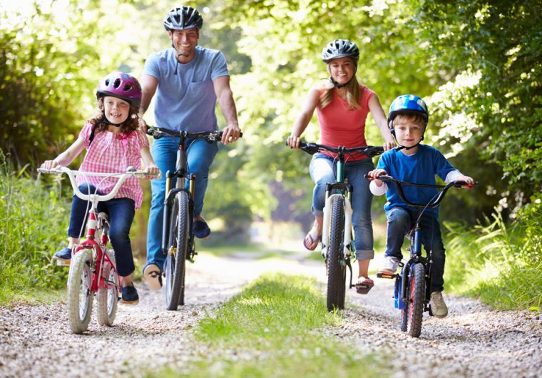
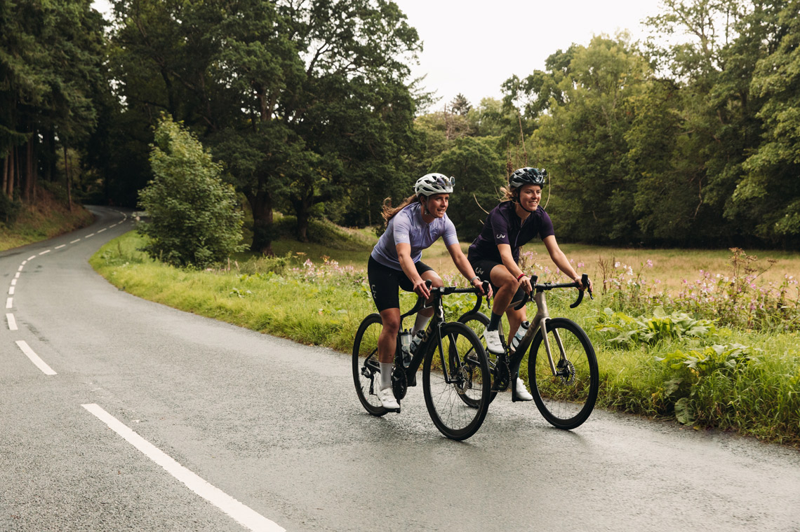
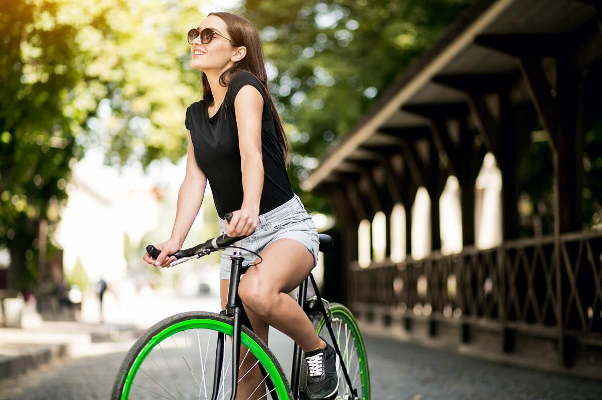

Gost odmah razumije o čemu se radi
Izazov je intuitivan i ne traži dugo objašnjenje, što je važno na lokacijama gdje ljudi prolaze usput.
Za turističke i frekventne lokacije
Najbolje radi na lokacijama gdje ljudi već prolaze, zastaju, čekaju ili traže kratku zabavu. Format je jednostavan, vizualno jasan i lako razumljiv već na prvi pogled.
Najbolje rezultate daje na mjestima gdje već postoji prirodan protok ljudi i gdje sadržaj može raditi kao spontana usputna aktivnost.
Vizualno jasno, kompaktno i dovoljno atraktivno da privuče pogled prolaznika.




Dobro partnerstvo ne temelji se samo na atraktivnosti nego i na operativnoj jednostavnosti i jasnom modelu suradnje.
Izazov je intuitivan i ne traži dugo objašnjenje, što je važno na lokacijama gdje ljudi prolaze usput.
Pokušaji su zabavni za gledati, pa sama aktivnost prirodno privlači novu publiku oko zone.
Nema složene tehnologije ni teške infrastrukture, što olakšava svakodnevni rad na lokaciji.
Jasan model suradnje olakšava procjenu isplativosti i svakodnevno vođenje atrakcije.
Osnovni paket uključuje sve što je potrebno za funkcionalnu i vizualno jasno postavljenu TwistedBike atrakciju.
Proširenje paketa definira se prema dogovoru i utječe na cijenu najma.
Najviše smisla ima ondje gdje ljudi već prirodno prolaze, zastaju i traže kratku zabavu ili dodatni sadržaj.
Dobar spoj prolaznosti, spontanog interesa i vidljivosti atrakcije.
Dodatna aktivnost za goste koja ne traži veliku infrastrukturu.
Kao dopuna postojećoj ponudi sadržaja i animacije na lokaciji.
Najčešća pitanja partnera i lokacija koje razmatraju suradnju.
TwistedBike osigurava opremu, pravila korištenja i podršku. Partner osigurava lokaciju, operatera i naplatu. Suradnja se definira kroz model najma prema dogovorenim uvjetima.
Naplatu i fiskalizaciju provodi partner, kroz vlastiti sustav naplate.
Preporučena postava je oko 2 × 4 m ravne i stabilne podloge. Ako je prostor drugačiji, postava se može prilagoditi.
Za osnovni format nije potrebna električna energija niti posebna infrastruktura. Potrebna je jasno definirana i sigurna zona vožnje.
Postavljanje i uklanjanje traje kratko, uz jednostavnu instalaciju na lokaciji.
Dovoljna je osnovna briga o opremi i redovita vizualna provjera. Periodični servis rješava se prema potrebi i dogovoru.
Da. Vizuali i elementi oko atrakcije mogu se prilagoditi identitetu lokacije ili sponzora, ovisno o dogovorenom modelu.
Ako lokacija nema dovoljan protok ljudi, nema osobu za vođenje atrakcije ili nema prikladan prostor, TwistedBike vjerojatno neće dati puni efekt. U takvim slučajevima preporučujemo razgovor prije odluke.
Pošaljite nam osnovne informacije o lokaciji i javimo se s prijedlogom modela suradnje.